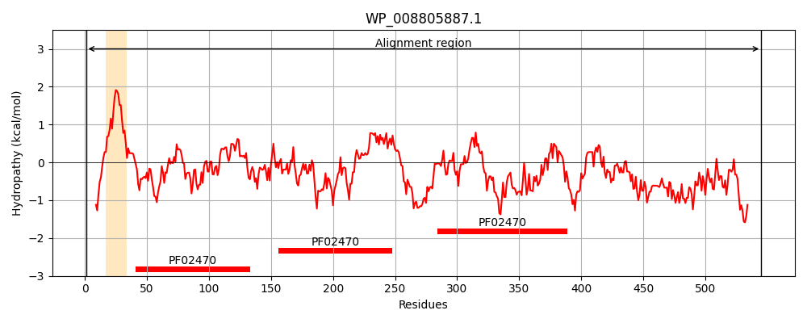
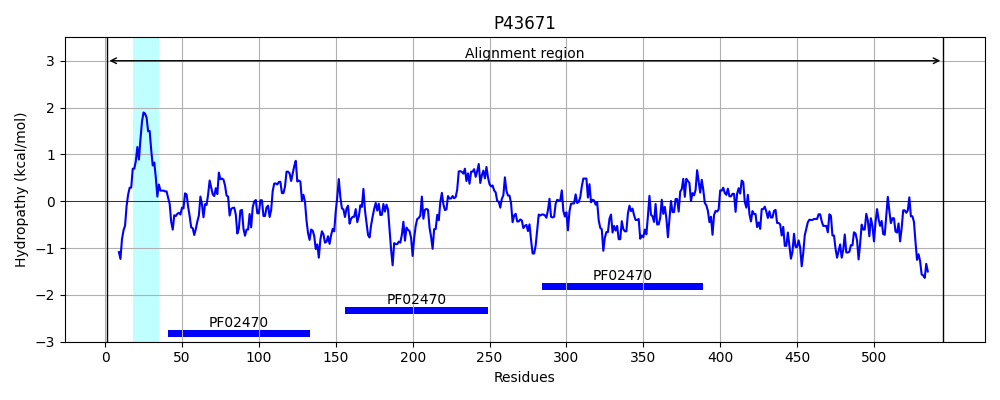
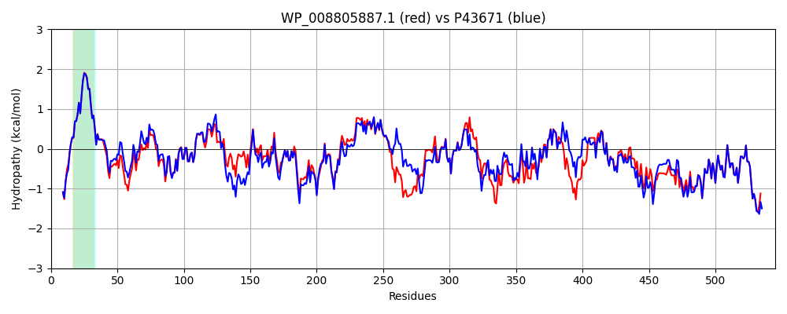

Hit Accession: P43671
Hit TCID: 9.A.69.1.1
Hit Description: gnl|BL_ORD_ID|10535 gnl|TC-DB|P43671|9.A.69.1.1 Paraquat-inducible protein B OS=Escherichia coli (strain K12) GN=pqiB PE=2 SV=2
Mach Len: 545
e:0.000000
Query TMS Count : 1
Hit TMS Count: 1
TMS-Overlap Score: 0.850000
Predicted Substrates:CHEBI:8150;phospholipid
BLAST Alignment:
Score: 2360 , Bit scores: 913 bits, E-value: 0.0e+00, Alignment length: 545, Percentage identity: 82
Query: 1 MENKSGEAKVQKVKNWSPVWIFPIVTALIGAWILFYHYSHQGPEVTLITTNAEGIEGGKTRIKSRSVDVGVVESATLTDDLTHVEIKARLNSGMQKLLHNDSVFWVVKPQVGREGISGLGTLLSGAYIELQPGSKGSVPAQYPLLDSPPLASPDAKGIRILLESSKAGQLSPGDPVLFRGYRVGSVETSTFDAQKRHITYQLFINAPNDRLVTTNVRFWKDSGIAVDLTAAGMRVEMGSLSTLFGGGVSFDIPEGLDLGEPVANKTEYHLFDDQKSIQDSVFTEHIDYVMFFKDSVRGLQPGAPVEFRGIRLGTVGKVPFFIPGLKQRLNDDYRIPVEVRVEPQRLVNQLGGDPNIRAHIDDLINRGLRGSLKTGNLVTGALYIDLDFYPKAPPRGKIQEFNGYPIIPTISGGLAQIQQRLMDALDKINNLPLNPLLEQATSTLAQSEKTMQHVQTTLDSLNKITSSQSMQQLPADMQTTLRELNRSMQGFQPGSAAYNKMVADMQRLDQVLRELQPVLKTLNDKSNALVFEAKDKKDPQPKGAK 545
ME+ +GEAK+QKVKNWSPVWIFPIVTALIGAW+LFYHYSHQGPEVTLIT NAEGIEGGKT IKSRSVDVGVVESATL DDLTHVEIKARLNSGM+KLLH D+VFWVVKPQ+GREGISGLGTLLSG YIELQPG+KGS +Y LLDSPPLA PDAKGIR++L+S KAGQLSPGDPVLFRGYRVGSVETSTFD QKR+I+YQLFINAP DRLVT NVRFWKDSGIAVDLT+AGMRVEMGSL+TL GGVSFD+PEGLDLG+PVA KT + L+DDQKSIQDS++T+HIDY+MFFKDSVRGLQPGAPVEFRGIRLGTV KVPFF P ++Q NDDYRIPV +R+EP+RL QLG + ++ H+ +L+ RGLRGSLKTGNLVTGALY+DLDFYP P I+EFNGY IIPT+SGGLAQIQQRLM+ALDKIN LPLNP++EQATSTL++S++TM+++QTTLDS+NKI +SQSMQQLP DMQ+TLRELNRSMQGFQPGSAAYNKMVADMQRLDQVLRELQPVLKTLN+KSNALVFEAKDKKDP+PK AK
Sbjct: 1 MESNNGEAKIQKVKNWSPVWIFPIVTALIGAWVLFYHYSHQGPEVTLITANAEGIEGGKTTIKSRSVDVGVVESATLADDLTHVEIKARLNSGMEKLLHKDTVFWVVKPQIGREGISGLGTLLSGVYIELQPGAKGSKMDKYDLLDSPPLAPPDAKGIRVILDSKKAGQLSPGDPVLFRGYRVGSVETSTFDTQKRNISYQLFINAPYDRLVTNNVRFWKDSGIAVDLTSAGMRVEMGSLTTLLSGGVSFDVPEGLDLGQPVAPKTAFVLYDDQKSIQDSLYTDHIDYLMFFKDSVRGLQPGAPVEFRGIRLGTVSKVPFFAPNMRQTFNDDYRIPVLIRIEPERLKMQLGENADVVEHLGELLKRGLRGSLKTGNLVTGALYVDLDFYPNTPAITGIREFNGYQIIPTVSGGLAQIQQRLMEALDKINKLPLNPMIEQATSTLSESQRTMKNLQTTLDSMNKILASQSMQQLPTDMQSTLRELNRSMQGFQPGSAAYNKMVADMQRLDQVLRELQPVLKTLNEKSNALVFEAKDKKDPEPKRAK 545 | Protein Hydropathy Plots: |
|---|
|  |  |
Pairwise Alignment-Hydropathy Plot:
|
|---|
|  |